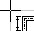

Az alaprajz rajzolása az aktuális munkalapon történik. Ha új munkalapot kell nyitni, a „Fájl” menübõl a „Munkalapok” pozíciót kell kiválasztani, és rákattintani az „Új” nyomógombra, kiválasztani a munkalap típusát (ebben az esetben „Terv/alaprajz”), és megnyomni sorban az „OK” és a „Bezárás” nyomógombokat. Az újonnan létrehozott munkalap válik aktuálisan szerkeszthetõvé. Az alul található fülek közül át kell lépni a „Konstrukció” fülre.
A konstrukció szerkesztése 4 allépésbõl áll:
1. A falak megrajzolása és a helyiségek létrehozása a „Fal” elem használatával.
2. A helyiségek kész rajzának kiegészítése az „Ablak”, „Ajtó” és „Faláttörések” elemekkel.
3. A konstrukció esetleges kiegészítése a vízszintes határoló szerkezetekkel, válaszfalakkal.
4. A válaszfalak és a helyiségek adatainak végleges beállítása, a hozzájuk rendelt ablakokkal és ajtókkal együtt.
1. Falak rajzolása a „Fal” elemek használatával és helyiségek létrehozása
Az
eszközsávon ki kell választani az „Elemek” fület, majd ki kell választani a
„Fal” nevû elemet egyszer az eszközsávon lévõ,
megfelelõ nyomógombra kattintva. A program átlép az elem, ebben az esetben a
fal beállításának üzemmódjába. Ezt fel lehet ismerni az állapotsávon (a
képernyõ alján, középen) megjelenõ üzenetbõl, valamint abból, hogy a „kurzor
alatt” megjelenik egy faldarab rajza 
! A fal kezdõ vagy végpontjának koordinátáit pontosan meg lehet határozni, ha (rajzolás közben) a az állapotsáv területére kattint, amelyen a koordináták láthatóak. A program ekkor megkérdezi az X és Y koordinátákat, beáll erre a helyre, és berak egy pontot.
A keresztezõdõ vízszintes és függõleges vonalak, mintegy célkeresztet alkotnak, amely segíti pontosan beállítani a kurzort a vonatkozási rendszerhez képest (vízszintes és függõleges skála), valamint a többi, már a rajzon található elemhez viszonyítva.
! Az elemek beállítása során lehet az adattáblában az olyan mezõket szerkeszteni, mint a „Hosszúság”, „Szélesség” és „Szög”. Ezekben a mezõkben bizonyos értékek megadása lehetõvé teszi a rajzra beállított fal paramétereinek precíz meghatározását.
Az elsõ fal berakása után újra ki kell választani a „Fal” elemet az eszközsávon, vagy meg kell nyomni az „Az utoljára beállított elem megismétlése” funkciót jelentõ F3 nyomógombot, és be kell tenni a következõ falat. A falaknak úgy kell egymással kapcsolódni, hogy zárt területet alkossanak, amit a program azonnal helyiségként fog felismerni. A helyiség létrejöttét a leírását tartalmazó címke megjelenésébõl (lekerekített sarkú négyszög), és a helyiség területének besatírozódásából lehet felismerni.
A szerkesztés során nagyon elõnyösen lehet a program speciális munkamódjait kihasználni: ISM, AUTO és ORTO. Az ISM üzemmód ugyanannak a beállítandó elemnek a folytonos ismételt kiválasztását jelenti. Az AUTO üzemmód hatására a program javasolja a beállított elem lehetséges pontjainak összekapcsolását (pl. a falakét) a rajzra már korábban berakott elemekkel. Lehetõvé teszi az elemek hatékony összekötését az egér precíz mozgatása nélkül. Össze lehet kötni az elemeket akkor is, amikor az AUTO üzemmód ki van kapcsolva, ez kizárólag az egérkurzor pontos beállítását kívánja meg. Az ORTO üzemmód hatására a program csak vízszintes és függõleges falak beállítását engedi meg, ami nagyszerûen megkönnyíti négyszög alakú helyiségek szerkesztését.
Az üzemmódok között úgy lehet átkapcsolni, hogy a jobb alsó sarokban, a terv rétegeit jelentõ fülek alatt levõ mezõkre kattintunk baloldali egérgombbal.
! Ha már létezik egy másik épületszint alaprajza, és ezt mint mintát szeretnénk felhasználni, be lehet kapcsolni a körvonalainak megjelenítését a „Nézet / Másik munkalap árnyékának megjelenítése” menüben – alapértelmezésben a balról a legközelebbi fül van kiválasztva az alaprajzzal.
A program lehetõvé teszi a sematikus szerkesztést is, a helyiségek pontos méretének és elrendezésének visszatükrözése nélkül. Ilyen esetben kézzel kell megadni a helyiség tényleges méretét, stb. Ez a megoldás meggyorsítja a konstrukció szerkesztését (a szerkesztés nem kíván nagy pontosságot), azonban mégsem ajánlott, mivel az így nyert rajznak sokkal kisebb az értéke az installáció kivitelezési terveként, és nem lehet felhasználni a hõveszteség számítás alapjaként. Ebben az esetben az összes bekötés adatát is ki kell egészíteni, ami végül is több munkával járhat, mint a helyiségek elrendezésének pontos szerkesztése.
A fal beállításáról bõvebbet az 5.3.1 fejezetben talál.
2. A helyiségek rajzának kiegészítése az „Ablak”, „Ajtó” és „Faláttörések” elemekkel.
Ahhoz, hogy a falon pl. egy ablakot helyezzünk el, ki kell választani az „Elemek” eszközsávról az elemet, és be kell állítani a falra a baloldali egérgomb kattintásával abban a pillanatban, amikor a célkereszt a fal közepét jelölõ vonalon található, ahol az ablak közepének kell lennie. Az ablak a fal kiegészítõ elemét alkotja, tehát csak az azt tartalmazó fal határai között lehet eltolni, és az irányát megváltoztatni. Az ablak vagy más kiegészítõ elemek adatai, többek között a mérete, az adattáblában a fal adatai alatt találhatók.
3. A konstrukció kiegészítése további elemekkel: „Vízszintes térelhatároló szerkezet: padló vagy födém”.
A program lehetõvé teszi, hogy az alaprajz konstrukcióját vízszintes térelhatároló szerkezetekkel egészítsük ki – ez abban az esetben hasznos, ha a felhasználó a hõveszteség számítását az Instal-heat&energy programban akacja elvégezni. Az eszközsávon két vízszintes határoló szerkezet között lehet választani: a padló és a födém között. Az elem kiválasztása és a rajzterületre való átlépés után kattintani kell valahol a kiválasztott helyiség területén, és ekkor a padló vagy a födém bekerül a helyiség egész területére a tengelyekben. Ezt a mûveletet meg kell ismételni minden helyiségre.
! A belsõ födémeket csak egyszer kell betenni és leírni a tervben. A felhasználó a belsõ födémet vagy “Födémként” rakja be az alsó szintre, vagy mint “Padlót” a felsõ szintre (a második módszert, vagyis a “Padlóként” történõ betételt ajánljuk).
4. A falak és helyiségek adatainak végleges konfigurálása, a hozzájuk rendelt ablakokkal és ajtókkal együtt.
Minden elemnek, tehát a falnak, a hozzárendelt ablaknak, ajtónak vagy falnyílásnak, padlónak, födémnek, de úgyszintén a program által felismert helyiségnek is meghatározott paraméterei vannak, amelyeket az adattáblázat segítségével át lehet tekinteni, és meg lehet változtatni. Az adattáblázatot be- és ki lehet kapcsolni az F12 funkcióbillentyû vagy a „Nézet / Az adattáblázat megjelenítése/Elrejtése utasítással”. Az adattáblázatban láthatóak az éppen kijelölt elemhez tartozó mezõk. Ahhoz, hogy az adott elemet kijelöljük, rá kell kattintani az egér baloldali gombjával. A fal kijelöléséhez a közepét jelölõ vonalra kell kattintani, viszont a helyiség vagy a vízszintes térelhatároló kijelöléséhez a címkére. Ki lehet jelölni egyszerre több elemet is, ha lenyomva tartjuk a Shift billentyût. Ha kijelölünk néhány azonos típusú elemet, pl. két helyiséget, akkor ezek adatait egyszerre lehet módosítani.
Az elemek adatainak nagy többsége alapértelmezésben meg van adva. Némelyiket azonban be kell írni, megint mások pedig opcionálisak.
! Sok adatot és értéket a program a rajzról olvas le, vagy más adatok felhasználásával határoz meg. Ezek az összegek zárójelben vannak elhelyezve. A Felhasználó felülírhatja õket általa megadott adatokkal. A visszatéréshez az alapértelmezett (a program által megadott) értékhez az adott mezõbe egy kérdõjelet kell írni, és meg kell nyomni az „Entert”.
Az alaprajz rendeltetésétõl függõen (alapfelületként, radiátoros vagy felületfûtés tervéhez, esetleg hõveszteség számításhoz is), a kiegészítendõ adatok köre különbözõ lesz.
! Az összes határoló szerkezet, válaszfal konstrukciójára vonatkozó információk, amelyek a határoló szerkezetnek a hõveszteség és a szezonális energiaigény számításához felhasznált hõtani tulajdonságai meghatározásához szükségesek, az adattáblázatban vannak beírva a konstrukció rétegein, miután a fájlt az Instal-heat&energy programba beolvasták, létrehozták a szükséges válaszfal szerkezeteket, és elmentették azokat.